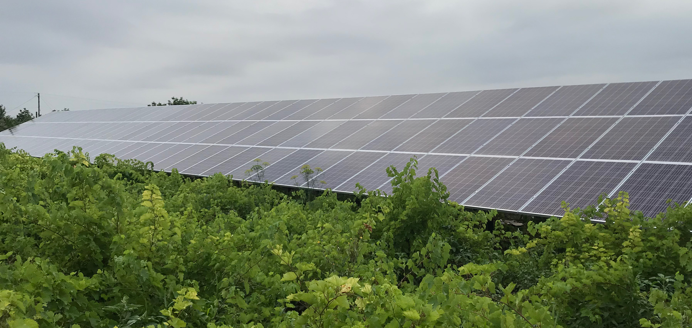

Какие же в настоящее время существуют основные альтернативные источники энергии?
Мы каждый день пользуемся электричеством и воспринимаем горящий свет как само собой разумеющееся явление. Однако энергоресурсы не генерируются самостоятельно, и для их производства государство ежегодно тратит огромное количество финансовых средств. Данный процесс также загрязняет окружающую среду. Учёные стремятся решить эту проблему и одним из самых популярных вариантов являются альтернативные источники энергии, которые стоят дешевле и не причиняют вреда природе.
Количество видов альтернативных источников энергии постоянно увеличивается. Специалисты данной сферы предпринимают попытки создать устройства, которые конвертируют возобновляемые источники энергии в электричество. Это может быть солнечная энергия, ветер, тепло земли или биологическое топливо.
Каждый из источников изучается отдельно и на данный момент было создано несколько отдельных отраслей, которые направлены на развитие и создание более продвинутых устройств преобразования энергии. Возможно, уже очень скоро мы перестанем сжигать уголь или другие ресурсы планеты, а начнём использовать экологические чистые альтернативные источники энергии. Это позволит улучшить состояние окружающей среды и сэкономить огромное количество финансовых средств.